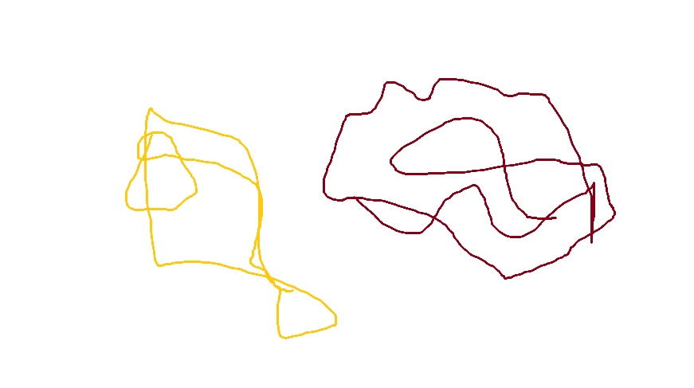

Shoyu Chicken

Shoyu chicken is a popular Hawaiian dish often served with rice. The word shoyu is Japanese for soy sauce.
Ingredients
- 1 cup soy sauce
- 1 cup brown sugar
- 1 cup water
- 1 onion, chopped
- 4 cloves garlic, minced
- 1 tablespoon grated fresh ginger root
- 1 tablespoon ground black pepper
- 1 tablespoon dried oregano
- 5 pounds skinless chicken tights
Return to
Home